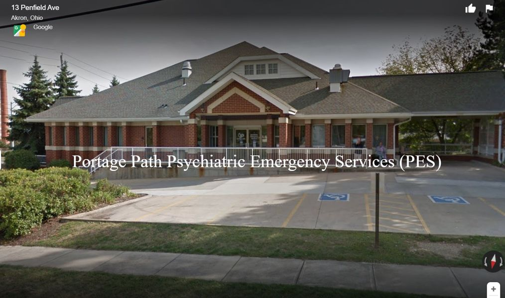

Timeline photos
Do you know PES?
If you are homeless you probably do. And you also know that if you go in those doors you aren't coming out.
I tried to get a SERIOUSLY mentally ill friend to go in there. There was no way in hell he was walking in those doors. He said that place is for crazy people. (Most "crazy" people think they are completely sane. )
I have another friend who jumped out of a moving car because they were being taken to this place.
It's great we have this place. But it's not much use if people are terrified of walking through those doors.